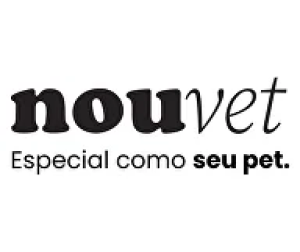

NOSSOS PATROCINADORES




Fundada em 2010, a ONG "Vida Livre" nasceu da paixão de um grupo de voluntários dedicados a transformar a realidade dos animais em situação de abandono e maus-tratos. A organização começou com uma pequena equipe e recursos limitados, mas rapidamente ganhou reconhecimento pela eficácia de seu trabalho e pelo comprometimento com a causa.
Com o passar dos anos, "Vida Livre" expandiu suas atividades para incluir resgates, reabilitação e adoção de animais, além de promover campanhas de conscientização e educação sobre o bem-estar animal. Hoje, a ONG conta com uma rede sólida de apoiadores e colaboradores, e suas ações impactam positivamente a vida de centenas de animais anualmente, tornando-se uma referência no setor de proteção animal.
Um espaço adequado para receber e acolher animais de rua deve ser planejado com cuidado para garantir o bem-estar e a segurança dos animais resgatados. Idealmente, esse espaço deve incluir áreas amplas e seguras, como canis e gatis, onde os animais possam se movimentar livremente e se socializar. É fundamental que o ambiente seja limpo, com sistemas eficientes de ventilação e controle de temperatura para evitar doenças. Áreas de atendimento veterinário devem estar equipadas para fornecer cuidados médicos e tratamentos necessários, enquanto espaços de recuperação e isolamento são essenciais para animais em processo de recuperação. Além disso, o ambiente deve oferecer estímulos adequados, como brinquedos e áreas de enriquecimento, para manter os animais mentalmente estimulados e felizes.